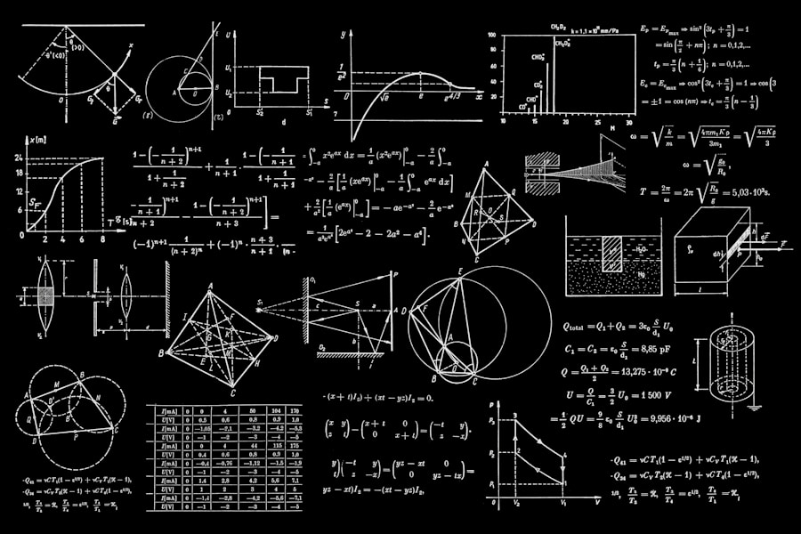

Die zugrundeliegende Struktur
Mathematik, Softwareentwicklung und Maschinen, die jetzt sprechen — drei Bereiche, die für mich immer eines waren.


Akademische Ausbildung
Ich habe einen Abschluss in Mathematik und Informatik der Universität Freiburg, Schweiz. Meine Diplomarbeit befasste sich mit numerischer Mathematik, insbesondere mit Algorithmen zur Approximation von Lösungen für Probleme ohne geschlossene Form.
Diese Verbindung von theoretischer Strenge und praktischer Berechnung ist ein roter Faden durch alles, was ich seither getan habe.
25+ Jahre in der IT
Meine berufliche Laufbahn verlief fast vollständig bei PostFinance, dem Finanzdienstleister der Schweizerischen Post — einer der grössten IT-Umgebungen der Schweiz. Über mehr als 25 Jahre arbeitete ich mit verschiedenen Technologien und in verschiedenen Rollen, von Mainframe-Systemen bis hin zur modernen Softwareentwicklung.
Zu den Sprachen und Technologien, mit denen ich intensiv gearbeitet habe, gehören Ada, Java, Python und XML-basierte Datenarchitekturen. Der Übergang von der prozeduralen Strenge von Ada zur Flexibilität von Python spiegelt in gewisser Weise die Transformation wider, die die Softwarebranche heute mit dem Aufkommen von LLMs erlebt.
KI & Grosse Sprachmodelle
KI ist die natürliche Konvergenz von allem, woran ich gearbeitet habe: die Mathematik der Wahrscheinlichkeit und Optimierung, die Disziplin des Engineerings grosser Softwaresysteme, und Sprache — die immer ein paralleles Interesse war. Grosse Sprachmodelle stehen genau an diesem Schnittpunkt.
Ich arbeite regelmässig mit Claude (Anthropic) und Gemini (Google), und erforsche Prompt-Engineering, agentische Workflows und die praktische Anwendung von LLMs auf reale Aufgaben — Übersetzungsrevision, Codegenerierung, Inhaltsstrukturierung und mehr.
Am Rande: Diese Website wurde durch das Schreiben von Code in Visual Studio Code erstellt, durchgehend unterstützt von Claude. Das Layout basiert auf CSS Flexbox und CSS Grid — kein Framework, kein Build-Schritt, nur Markup und ein Stylesheet. Ein Experiment darin, was eine Einzelperson mit einem guten Modell und einer klaren Idee produzieren kann.